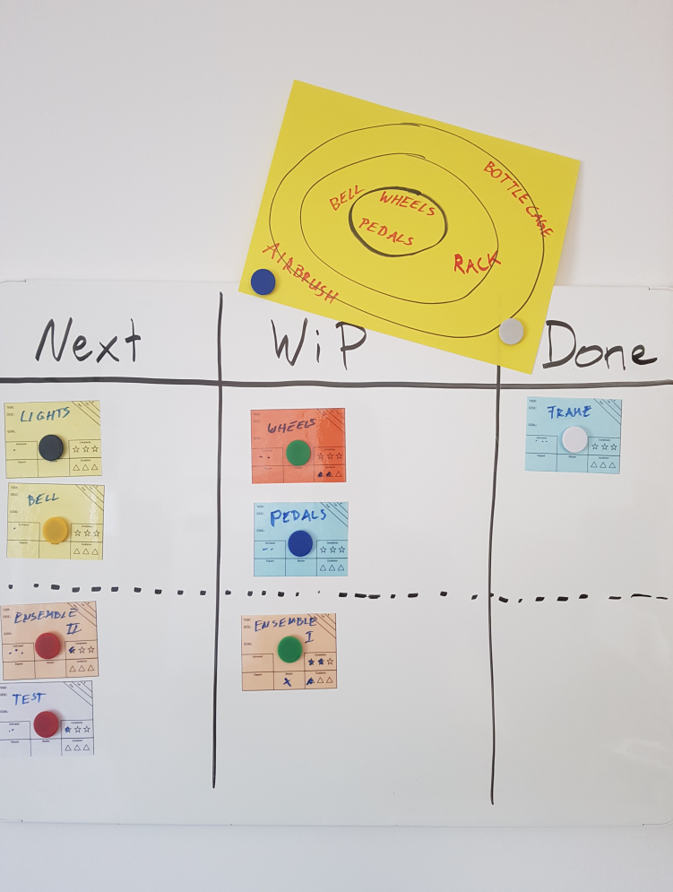
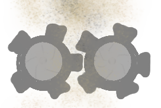
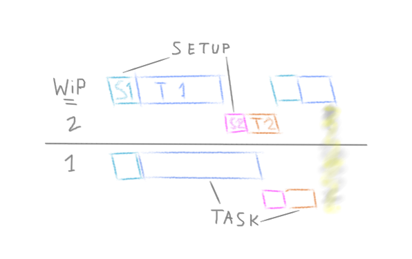
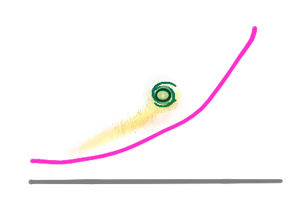

In a nutshell 🌰 (tl;dr)
Above all,
USE COMMON SENSE
when running projects!
Additionally, you can take some inspiration from the techniques described below. Make sure to always keep PROCESS, SCOPE and PEOPLE in mind when making project related decisions.
Have fun!
1 Focus
[SCOPE]
The first thing to do, when a project is ready to start, is to define the scope. Depending on the project size and setup this can be done in various granularity.
In any case, I found it to be very useful to always make a very high level scope description. An easy way to implement it, is to draw a Focus Circle like this:
- Make sure the developers and product owner participate in the Focus Circle creating session.
- Grab a physical sheet of paper.
- Draw three circles like a dartboard.
- Think of your MVP (minimum viable product).
- Now, write some of the most important features in the innermost circle.
- Continue by writing some less important features in the intermediate circle.
- Put some nice-to-have features to the outer circle.
- The feature list must not be complete. The listed features should rather be easy to grasp and be a great representation of mandatory, important and nice-to-have features.
- Finally, write some out-of-scope features at the borders of the page.
Now, with the Focus Circle in place, you have a nice tool which can be used through-out the project. Bring it to the first couple of meetings and just pin it to the board or to the wall.

Then, after a few meetings, let it disappear. When you are a couple of weeks into your project and tension rises, you disagree on the urgency of topics or the team gets stuck implementing off-topic features, then you take out the Focus Circle. Slam it on the desk and remind everybody what the major goal of the project is. I’m sure you’ll be back on track, at least for a couple of hours or even days.
2 Build a diverse Team
[PEOPLE]
Have you ever been in a team with lots of “alphas”? I once competed in such an “alpha” team against other more heterogeneous teams. Guess who did the worst?! If everyone wants to decide which dinner to cook, it is hard to agree on a recipe. And afterall, somebody still has to cut the onions and peel the potato.
In another project we started out with a team of highly qualified analysts and engineers. The teammates knew each other well and the hierarchies were clear. One seat still had to be filled for a project governance role. This role was assigned to a person we only had very few interactions with before. This person had different characteristics than the rest of us and therefore brought different perspectives to the project. Although the person wasn’t actually involved in building the product, it was crucial for the project success to have the person in the team.
It’s important to sometimes disrupt thinking in established ways, even if this thinking has been successful before. “We’ve always done it like this…” is the tombstone of innovation. Diverse teams will challenge this kind of thinking.
3 The Currency of Business
[PEOPLE]
💰 You think money is the currency of business? - Nope.
🔸 Maybe rank? - No.
🔄 Then it must be a great network? - Not really.
The most valuable currency you can earn in business is, when people want to work with you AGAIN! Money, rank and network will eventually be the outcome, if people want to work with you again.
What does it take for people to want to work with you again?
- Trust / reliability
- Sympathy / being pleasant
- Competence / skill
What if you only want to work with highly performing teammates?! Here is the trick. Just add a great Environment to Trust, Sympathy and Competence and you’ll have a great chance to see high performance happening in your team.
4 Do Dailies, Retros & Planning, but smart!
[PROCESS]
Just do them!
I know, some people hate meetings, especially if the schedule is filled up with meetings. I haven’t seen projects fail because of daily meetings, but I have seen projects fail because of the absence of regular meetings.
But be smart. Daily Meetings don’t have to be 15 minutes long. Choose what ever suites the project. Do the recurring meeting always on the same time and place. Rather skip one meeting then moving it around in the schedules. This reduces time wasting coordination.
There is also no need for a four hour planning session per sprint where everybody is applying to. The planning can be prepared by few relevant people and fine-tuned later on in a half-hour session with everybody being involved.
Retros? Sure! Hence, no lessons learned, no improvement. No time for emotions, no chaka.
5 Train or get help on central Issues
[SCOPE]
🐓: “I’ve written HTML once before in the 90’s, I’ll design the customers landing page.”
😰: Are you kidding, right?
🎅: “I’ve organized the best Christmas party. Let me draw the BPMN for the main process.”
😟: Noway!
We all want to learn, improve and try out new things and it should be part of our job. But it’s not a good idea to start with critical steps. There is a reason, why people study and gather experience over time. Do some professional training (many of them are for free) or mix teams with experienced and curious people.
6 Define Roles, explicitly
[PEOPLE]
Make sure everybody is aware of the role they are playing in the project. Not only define the name of the role (e.g. Project Manager), but explicitly define the responsibilities and expectation of the role. Is the business analyst also responsible of writing a technical requirement? - Is the Product Owner joining the daily meetings or only the planning and the sprint review? - Is the project manager only doing governance or also reevaluating and sorting the tasks?
There is no one-fits-all answer to the duties of each role. Make sure everyone has the same understanding of the project members’ roles, regardless of the name.
7 Trouble with overlapping Roles
[PROCESS]
Although you may be able to play many different roles in a project, you should avoid to hold too many. Some roles include steady interaction with other people and lot’s of interruptions throughout the day. Some roles require long lasting focus time to “go deep”. Sometimes roles have opposite objectives, e.g. implementing tasks perfectly vs. get tasks finished quickly. Uniting to many roles in the same person can case contradictions and harm the project progress.

As techie, do not assume that team members that are not actively writing code are a waste of resources. If you have a great analyst, you can code in lightning speed. If someone properly prepares the tasks for the upcoming sprint, you’ll save lots of time-consuming meetings. If you have a bouncer to talk to the stakeholders, you can stay focused.
8 Over-Frameworkification
[SCOPE]
Avoid complex project management frameworks and don’t be overly academic about them. The way you run a project should adapt your style of working and your companies culture.
Sometimes it can be helpful to start with an “academic” approach and adapt a framework for your purpose. But more important than religiously following a framework, is to understand, why a framework defines certain parts and how the parts interact with each other. If you understand why frameworks specify certain actions and roles it is easy to adjust it to your purpose.
9 Use Outsourcing
[PROCESS]
Remove distractions to keep focused on the project. Delegate duties that are not related to the project to your manager. The manager can manage them. There is a reason why there is a work in progress (WiP) limit, it reduces setup time.

If there are tasks in your project that nobody is comfortable with, find someone who can do it. For example, your team is all technical, the stakeholders don’t understand your language and you also get exhausted following there jargon. Try to recruit somebody to do the communication, there are people who love doing that, your team will shine and you don’t get distracted doing your job.
🔨: Delegation, Work in Progress Limits, Recruiting
10 Keep a Backlog
[SCOPE]
Its easy to loose track about what still needs to be done in the future. Gather the tasks that come up, you can still throw them away, if they get useless. Consider to define a proper User Story (Feature abc, for persona xyz, so that…), so you don’t end up implementing nonsense.
11 Prioritize and reevaluate
[SCOPE]
Planning is an ongoing process in a project. Prioritize important and critical tasks. Keep the big picture in mind. Reevaluate your priorizations regularly. Don’t forget to communicate your decisions.
12 Get regular Feedback
[SCOPE]
Transparency is your friend. You want a buy-in from all your stakeholders. You might get hints about issues, you wouldn’t come up on your own. You also distribute some accountability to the stakeholders. Extract tasks from the feedback and put it in the backlog. Reevaluate your prioritization.
13 To build Momentum, you have to start small
[PROCESS]
Imagine, the first project sessions are over and you have gathered way too many tasks and feature requests. For sure there will be more while the project proceeds. Say, you start your first planning session with these parameters:
- Project duration: 3 Months
- Feature requests: 36
- Sprint length: 2 weeks.
At this point it is likely that one of the Epic-Project-Fails will gonna happen:
🐹: 36 features in 6 sprints? We have to built 6 features per sprint! Which 6 do we pick for sprint 1?
🐐: We have to pick at least 8, because there will be new tasks coming up along the way!
Now you have to be very strong because your arguments are very counter intuitive, if you haven’t worked through it and experienced it for many times. So remember your mantras:
- You want to start your project with an success.
- Your team is not properly formed yet and is certainly not riding this new project’s “wave”, yet.
- You haven’t thought off every pitfall in advance. E.g. your devops environment might change and on-boarding takes longer as expected.
- Be aware that humans think linearly not exponentially.
Now, you should strongly insist on picking “only” 1-2 features for the first sprint! In case your team has an outstanding start and everything goes smooth, you still can grab an additional task throughout the sprint. Now, when you are all set and celebrate the success of the first sprint(s) you can gradually pick more task for the future sprints.
You build up momentum.

Some new task will show up during the project and others will become obsolete and disappear. Stay focused and you will end up with an useful product after the three month. And whatever you end up with is exactly what three month of excellent work is worth it.
14 Define Measures for the Goal, not the Spreadsheet
[PROCESS]
Don’t use story points!
If you are a software developer, you are in the creative business. If you do the same things over and over, you’ll eventually end up automating them (e.g. Templates, UnitTest, DevOps-Pipelines, …). Hence most of the time you’ll end up doing new things.
Very often story points are implicitly defined as a time slot. So you end up planing time slots. How do you properly estimate time for work you never did before? Right, very vaguely! You always end up with over or under estimates. But that is not the problem, yet.
The problem arises when you link the story points to budgets and personal/team goals.
Personal/team goals:
👩: There are 3 more story points available for the next sprint. Which tasks should we add to the sprint?
🐰: Let’s squeeze in task xyz, it’s three easy story points.
🐌: Maybe task abc is not really 2 points, but rather 3 points, let’s take that one!
See, they are fooling themselves. Ok, can’t happen to you. Because you have a strict planning process where the story points are not renegotiated, when filling the sprint backlog. So your negotiation happens before, when estimating the story points? - Zero-sum. By the way, does anyone still want’s to work after 4 hours of “planning”/negotiating?
Budget:
👨: Are you sure getting coffee for the team is only 1 story point? Add some buffer and make it 3, I don’t want endless discussions with the budgeting team why we are off the plan.
Once, again. They fooled themselves, and the budgeting team.
At this point the agile mindset comes in handy: fixed time, fixed resources, variable outcome.
🐗: You agile folks are so naive. You need a budget to build your product. And you have to make a commitment and promise a certain outcome to get a budget.
- Naive?
- No!
- Need a budged?
- Yes!
- Make commitment?
- Yes, we commit to give our blood, sweat and tears for the best possible outcome, given time and money.
- Promise certain outcome
- We promise best possible outcome, given time and money. To archive this we are constantly reevaluating the project progress using full transparency, prioritizing and reevaluating and including regular feedback from stakeholders. This mitigates the risk for the person providing the budget.
If you have a healthy relationship and want to increase the currency of business you are willing to accept. It needs a lot of trust and the risk remains on the site that provides the budget and the decision makers. That’s where the risk belongs too.
What if you can’t convince the budget site to agree on an uncertain outcome? One possibility is to use outsourcing. There are many people who love to do communication. And very often there is a way to “spin” things so everybody looks (and sometimes even feels) like a winner. Stay focused on the project and leave politics to those who enjoy it.
Which measures to use instead? Define your measure as complexities rather than timely estimates. Some examples:
- Did we do something like this before? - Yes / No
- Do others do this? - Yes / No
- How clear is the request? - Shallow / crystal clear / to be defined
- Will the expert be available to answer questions? - Sometimes / instant / on holiday
- etc.
15 Always be inclusive
[PEOPLE]
How does it feel to be left out, when decisions are made that effect your tasks? What happens to the motivation of an expert, when the expert is not invited or ignored on discussion of their field?
In some case the excluded person feels transactional, they might think:
😑: Alright, I just do my job, don’t ask questions and take the money.
But it can also lead to self-doubt.
😕: I get mobbed. - My expertise is not as valuable as I thought. - I’m not making an impact.
Or result in a “THEY”-kind of thinking instead of “WE”.
😒: They probably didn’t want to wast my time. - They try to hold me short. - They are stupid, anyway. - They can do their shit on their own.
It’s clear that exclusion leads to a decline of trust and loss of identification with the project.
If you want people to engage, you have to be inclusive. That doesn’t mean, I have to be involved in any decision at any time. But I want to have the chance to be involved in topics that are important to me and my work.
But what if you don’t want somebody else involved, like in the planning meeting example? The major part of the planning was done by very few people, to be more efficient. But why not add another person to be more inclusive.
Also, be nice to support stuff. a) It’s the right thing to do! b) It will come around. (Don’t you want the secretary to warn you, if it’s “not a good time to knock on that door to ask for a favor” and guess who doesn’t make it to the email distribution when you behave like a jerk.)
16 Let Outsiders join your Meetings
[PEOPLE]
Consider to open your meetings to people outside of the project. Your company’s working culture could improve. You share ideas and might get some useful feedback from the visitors or insides by visiting others’ meetings.
If you fear to be disturbed by the outsiders during the meetings, just set up some rules (e.g. “Visitors shouldn’t actively participate. I’ll talk about your questions afterwards.” ).
17 Watch for Breaks and Needs
[PEOPLE]
If the project really goes well and people are in a flow, the chances are high that people loose track of their health (food, sleep and exercise) and their social well-being (family and friends).
We all love the flow! But be aware that you are running a marathon in a project and you still need power and support when situations in project occur that don’t go smoothly. Besides, you might put pressure on your mates when you are staying late every day.
If somebody drops out, it puts a huge burden on the project. You have to restuff, reorganize and eventually find back to the flow. You’ll lose focus in that time.
18 Celebrate 🎉
[PROCESS]
If you reach certain milestones, celebrate! Even if the team is tired of the project and everybody is happy that it’s finally over. At least go out for lunch or dinner with the project mates.
There is nothing more hamsterwheelish than going from one project to the next one without a clear breaking event, such as a celebration.
It also effects your currency of business. Like the dentist, who gives candy to a kid after a dental session. It makes the kids come back again, with less fear.
Ending an exhausting project with a nice event is a psychological trick, too. Looking back, the last impression and feelings are those who stick later on.